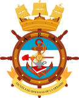

JUAN OJER
Sobre mi
Hola, ¿qué tal? Soy Juan Ojer. Técnico electromecánico con una trayectoria sólida en mantenimiento, instrumentación, logística operativa y soporte a ingeniería, desarrollada tanto en el sector estatal como en la industria y, especialmente, en servicios petroleros.
Mi carrera comenzó en la Armada Argentina, donde trabajé durante 16 años como Perito Auxiliar Mecánico, desarrollando mantenimiento automotriz y de maquinaria pesada, diagnóstico de fallas, gestión logística y documentación técnica. También lideré y evalué personal, fortaleciendo mi capacidad para trabajar bajo presión y mantener altos estándares de operación y seguridad.
En el sector industrial me desempeñé como técnico de instrumental y en ingeniería de procesos en empresas como IATEC, FAPESA y SOLNIK, realizando mantenimiento de maquinaria automática, operación de líneas SMT/THT, programación de equipos y gestión de documentación técnica.
En el sector petrolero trabajé en HUINOIL como responsable de depósito y del planning de mantenimiento, coordinando recursos, abastecimiento y equipos críticos para garantizar la continuidad operativa en campo.
Actualmente me encuentro en la industria de manufactura electrónica, trabajando como instrumentista de testing en ingeniería. Mi objetivo es reincorporarme al sector Oil & Gas, aplicando mi experiencia técnica, mi disciplina operativa y mi capacidad de liderazgo.
EXPERIENCIA PROFESIONAL
Instrumentista en área de Testing de Ingeniería – manufactura electrónica (Actual).
- Operación, verificación funcional, soporte técnico a ingeniería y control de trazabilidad.
Técnico sector ingeniería instrumental en SOLNIK
- Mantenimiento de líneas automáticas, apoyo a producción, programación de equipos y documentación técnica.
Encargado de Planning de Mantenimiento y Depósito – HUINOIL (2015–2016).
- Gestión de equipos críticos.
- Planificación de mantenimiento.
- Control logístico .
- Soporte operativo en campo.
Técnico-operador en línea de inserción automática
- Operación, mantenimiento y programación de maquinaria automática.
Técnico de mantenimiento en líneas automáticas Non TV (2013-2014)
Técnico de mantenimiento en FAPESA
Operario de línea automática en FAPESA
Técnico de mantenimiento en Mirgor Interclima (2011)

Administrador de Oficina de Mantenimiento / Pañol (2008–2011)
- Gestión de materiales, documentación técnica, informes operativos.
Misiones internacionales – Haití y Chipre.
- Operación y mantenimiento de flota pesada, equipos especiales y soporte técnico en entornos de alta exigencia.
Encargado de sección y responsable de flota liviana (1997–2006).
- Mantenimiento de vehículos, gestión de historiales técnicos y elaboración de informes.
Mecánico de taller (1995–1996)
LO APRENDIDO
🔧 Mantenimiento Industrial y Confiabilidad
- Diagnóstico, reparación y mantenimiento preventivo/correctivo.
- Programación y operación de líneas automáticas SMT/THT.
- Mejora continua y reducción de fallas en entornos de producción.
- Uso de equipos: Radial R8, Fuji NXT2/XPFL, Juki, Panasonic, Vitronic.
⚙️ Instrumentación y Testing
- Ensayos funcionales, control de calidad y soporte a ingeniería.
- Documentación técnica y trazabilidad de procesos.
🛢️ Operaciones Oil & Gas
- Planning de mantenimiento en campo.
- Gestión de stock operativo y repuestos críticos.
- Continuidad operativa y coordinación inter-áreas.
- Enfoque en seguridad y estándares operativos..
🚗Logística Técnica y Mantenimiento Automotriz
- Mantenimiento de flota pesada.
- Operación (registro profesional) y abastecimiento logístico.
👨🔧 Liderazgo
- Conducción y evaluación de personal técnico.
- Distribución de tareas y seguimiento operativo.
📚 Normas y Seguridad
- Aplicación de ISO 9001, ISO 14001 y OHSAS 18001.
🌍 Experiencia Internacional
- Haití y Chipre: soporte técnico en condiciones operativas exigentes.
ESTUDIOS
ESCUELA DE MECÁNICA DE LA ARMADA ARGENTINA
Formación técnica orientada al mantenimiento de equipos y sistemas mecánicos industriales y navales, con fuerte base práctica en diagnóstico, operación y reparación de maquinaria pesada como motores, calderas, turbinas y sistemas de propulsión. Esta formación me permitió integrarme rápidamente a funciones de mantenimiento, logística técnica y soporte a ingeniería.
Materias principales- Máquinas y Motores Auxiliares.
- Tecnología Mecánica.
- Laboratorio de Máquinas Térmicas.
- Talleres Mecánicos.
- Instrucción Naval.
- Química e Inglés Técnico.
- Sistemas de Propulsión y Generación.
MIS CAPACITACIONES
INDUSTRIA PETROLERA
Electrónica e Ingeniería
Logística y Operaciones
HABILIDADES
EXCEL
WORD
POWERPOINT
TANGO GESTIÓN
HUSKY GESTIÓN
PROGRAMACIÓN EN C
SISTEMAS DE PROGRAMACIÓN AUTOMATIZADA
DOCUMENTACIÓN TÉCNICA
ELECTRICIDAD Y ELECTRÓNICA
TORNO Y FRESA
SOLDADURA
OPERACIÓN DE FLOTA PESADA
IDIOMAS
INGLÉS TÉCNICO
DATOS PERSONALES
Juan Ojer
+54 9 2964 626603 ( Click para comunicarte conmigo 😊)
Disponibilidad full time
Disponibilidad para viajar
Licencia de conducir B2 - Movilidad propia
Descargar CV ( Click para descargar CV en PDF)
MIS REFERENCIAS
• Martín Gonzalez – Jefe área ingeniería (Mirgor) – 2964553888
• Gustavo Herrera – Campamento Chorrillo – 2964-496634
• Ramón Oronel – Jefe producción Solnik – 2964-418752